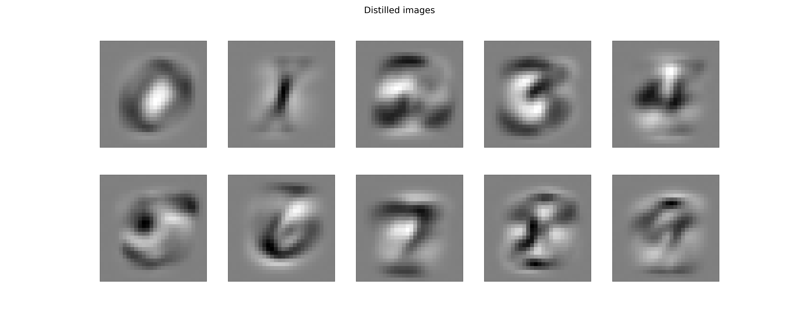

Note
Click here to download the full example code
Dataset distillation
Dataset distillation [Maclaurin et al. 2015], [Wang et al. 2020]) aims to learn a small synthetic training dataset such that a model trained on this learned data set achieves small loss on the original training set.
Bi-level formulation
Dataset distillation can be written formally as a bi-level problem, where in the inner problem we estimate a logistic regression model \(x^\star(\theta) \in \mathbb{R}^{p \times k}\) trained on the distilled images \(\theta \in \mathbb{R}^{k \times p}\), while in the outer problem we want to minimize the loss achieved by \(x^\star(\theta)\) over the training set:
where \(f(W, X; y) := \ell(y, XW)\), and \(\ell\) denotes the multiclass logistic regression loss, and \(\text{l2reg} = 10^{-1}\) is a regularization parameter that we found improved convergence.
import itertools
import tensorflow_datasets as tfds
from matplotlib import pyplot as plt
import jax
from jax import numpy as jnp
from jaxopt import GradientDescent
from jaxopt import objective
jax.config.update("jax_platform_name", "cpu")
# load mnist
mnist_train, ds_info = tfds.load(name="mnist", split="train", with_info=True)
images_train = jnp.array([ex['image'].ravel() for ex in tfds.as_numpy(mnist_train)]) / 255.0
labels_train = jnp.array([ex['label'] for ex in tfds.as_numpy(mnist_train)])
mnist_test = tfds.load(name="mnist", split="test")
images_test = jnp.array([ex['image'].ravel() for ex in tfds.as_numpy(mnist_test)]) / 255.0
labels_test = jnp.array([ex['label'] for ex in tfds.as_numpy(mnist_test)])
# these are the parameters of the logistic regression problem (inner problem)
params = jnp.ones((28 * 28, 10))
rng = jax.random.PRNGKey(0)
# distilled images (initialized at random, to be learned). These are the
# parameters of the outer problem
distilled_images = jax.random.normal(rng, (10, 28 * 28)) / (28 * 28)
distilled_labels = jnp.arange(10)
# amount of L2 reglarization of the inner problem. This helps both the
# convergence of the inner problem and the computation of the hypergradient
l2reg = 1e-1
inner_loss = objective.l2_multiclass_logreg
gd = GradientDescent(fun=inner_loss, tol=1e-3, maxiter=500)
# we now construct the outer loss and perform gradient descent on it
def outer_loss(img):
# inner_sol is the solution to the inner problem, which computes the
# model trained on the 10 images from distilled_images. This makes
# the problem bi-level, as the objective depends itself on the solution
# of an optimization problem (inner_sol)
inner_sol = gd.run(params, l2reg, (img, distilled_labels)).params
return objective.l2_multiclass_logreg(
inner_sol, 0, (images_train, labels_train))
gd_outer = GradientDescent(fun=outer_loss, tol=1e-3, maxiter=50)
distilled_images, _ = gd_outer.run(distilled_images)
fig, axarr = plt.subplots(2, 5, figsize=(10 * 5, 2 * 10))
plt.suptitle("Distilled images", fontsize=40)
for k, (i, j) in enumerate(itertools.product(range(2), range(5))):
img_i = distilled_images[k].reshape((28, 28))
axarr[i, j].imshow(
img_i / jnp.abs(img_i).max(), cmap=plt.cm.gray_r, vmin=-1, vmax=1)
axarr[i, j].set_xticks(())
axarr[i, j].set_yticks(())
plt.show()
Total running time of the script: ( 1 minutes 0.398 seconds)